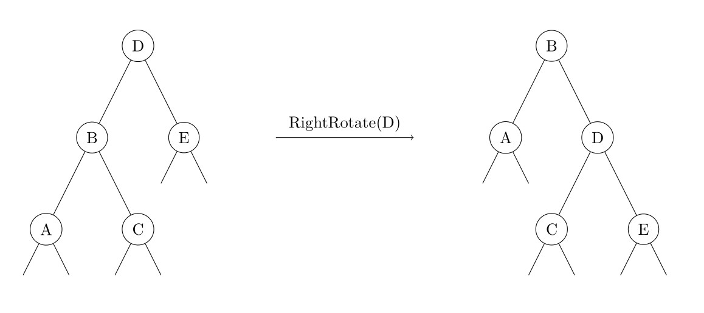

Avl
AVL 树，是一种平衡的二叉搜索树。由于各种算法教材上对 AVL 的介绍十分冗长，造成了很多人对 AVL 树复杂、不实用的印象。但实际上，AVL 树的原理简单，实现也并不复杂。
性质¶
- 空二叉树是一个 AVL 树
- 如果 T 是一棵 AVL 树，那么其左右子树也是 AVL 树，并且 |h(ls) - h(rs)| \leq 1，h 是其左右子树的高度
- 树高为 O(\log n)
平衡因子：右子树高度 - 左子树高度
树高的证明 设 f_n 为高度为 n 的 AVL 树所包含的最少节点数，则有
显然 \{f_n+1\} 是一个斐波那契数列。众所周知，斐波那契数列是以指数的速度增长的，因此 AVL 树的高度为 O(\log n)。
插入结点¶
与 BST（二叉搜索树）中类似，先进行一次失败的查找来确定插入的位置，插入节点后根据平衡因子来决定是否需要调整。
删除结点¶
删除和 BST 类似，将结点与后继交换后再删除。
删除会导致树高以及平衡因子变化，这时需要沿着被删除结点到根的路径来调整这种变化。
平衡的维护¶
插入或删除节点后，可能会造成 AVL 树的性质 2 被破坏。因此，需要沿着从被插入/删除的节点到根的路径对树进行维护。如果对于某一个节点，性质 2 不再满足，由于我们只插入/删除了一个节点，对树高的影响不超过 1，因此该节点的平衡因子的绝对值至多为 2。由于对称性，我们在此只讨论左子树的高度比右子树大 2 的情况，即下图中 h(B)-h(E)=2。此时，还需要根据 h(A) 和 h(C) 的大小关系分两种情况讨论。需要注意的是，由于我们是自底向上维护平衡的，因此对节点 D 的所有后代来说，性质 2 仍然是被满足的。

h(A)\geq h(C)¶
设 h(E)=x，则有
其中 h(C)\geq x 是由于节点 B 满足性质 2，因此 h(C) 和 h(A) 的差不会超过 1。此时我们对节点 D 进行一次右旋操作（旋转操作与其它类型的平衡二叉搜索树相同），如下图所示。

显然节点 A、C、E 的高度不发生变化，并且有
因此旋转后的节点 B 和 D 也满足性质 2。
h(A)<h(C)¶
设 h(E)=x，则与刚才同理，有
此时我们先对节点 B 进行一次左旋操作，再对节点 D 进行一次右旋操作，如下图所示。

显然节点 A、E 的高度不发生变化，并且 B 的新右儿子和 D 的新左儿子分别为 C 原来的左右儿子，则有
因此旋转后的节点 B、C、D 也满足性质 2。最后给出对于一个节点维护平衡操作的伪代码。
1 2 3 4 5 6 7 8 9 10 11 12 13 | |
与其他平衡二叉搜索树相同，AVL 树中节点的高度、子树大小等信息需要在旋转时进行维护。
其他操作¶
AVL 树的其他操作（Predecessor、Successor、Select、Rank 等）与普通的二叉搜索树相同。
其他资料¶
在 AVL Tree Visualization 可以观察 AVL 树维护平衡的过程。
build本页面最近更新：，更新历史
edit发现错误？想一起完善？ 在 GitHub 上编辑此页！
people本页面贡献者：OI-wiki
copyright本页面的全部内容在 CC BY-SA 4.0 和 SATA 协议之条款下提供，附加条款亦可能应用